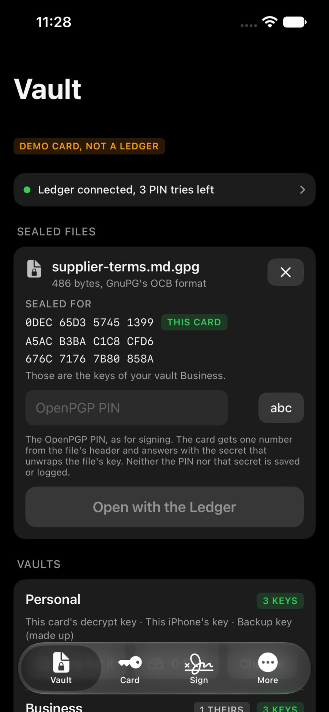
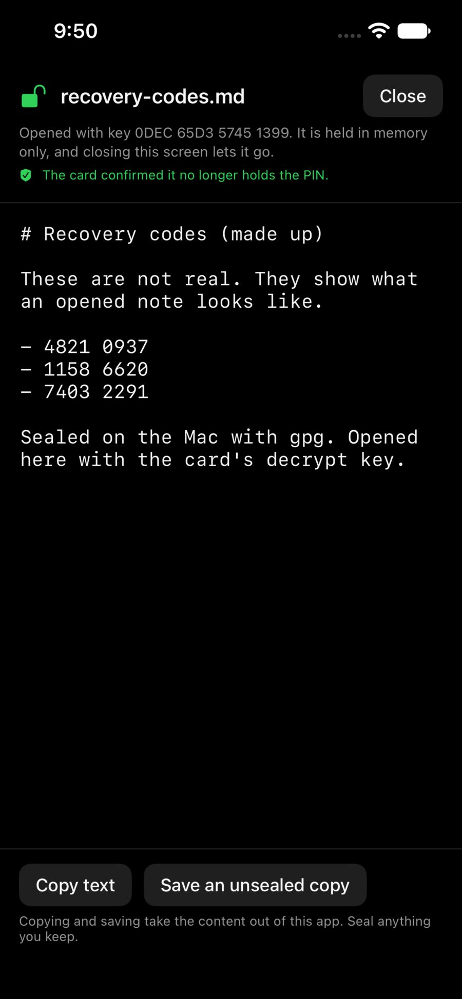

03 / 09Seal guide
Open a sealed file
A file sealed for your key opens with Face ID, or with your Ledger’s PIN.
Bring the file in
Any of these works:
- On the Vault page, tap
Choose a fileand pick it. - In Files, Mail, Messages or AirDrop, open the
.gpgfile and pick Seal. - Copied as text (it starts with
-----BEGIN PGP MESSAGE-----)? TapPaste sealed text. - From a vault: tap the vault’s files, then
Open.
Seal reads who the file is for before anything is opened. No PIN, no Face ID yet.

Open it
- Sealed for this iPhone: tap
Open with Face ID. - Sealed for your Ledger: plug it in, open its OpenPGP app, type the OpenPGP PIN and tap
Open with the Ledger. - Locked with a passphrase: type the passphrase and tap
Open with the passphrase.

The opened file lives in memory only. Copy text copies it for a short while, on this iPhone only. Save an unsealed copy writes it where you choose: after that, that copy is yours to look after. Closing the screen, or leaving the app, lets the opened file go.
Tip
A file that isn’t for any key on this iPhone says so before asking for anything. Nobody gets a Face ID prompt for a file they can’t open.